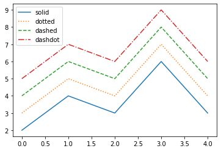
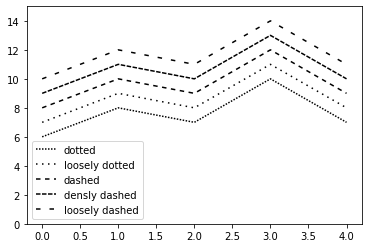
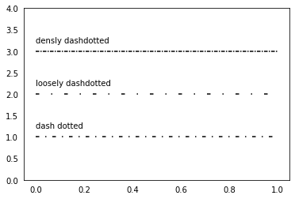
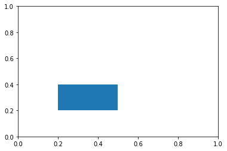
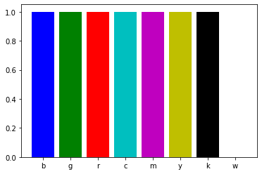
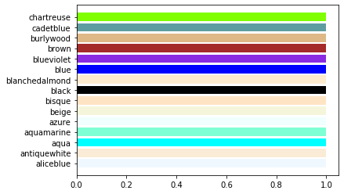
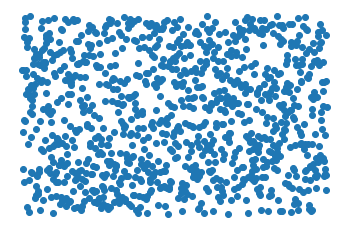
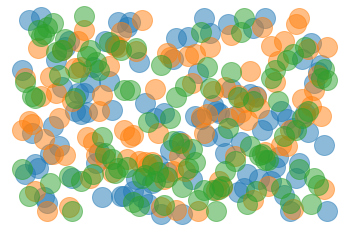

Format¶
Cette section présente les différents formats.
Style de ligne¶
Un style de ligne simple peut être désigné avec un mot.
styles = ('solid', 'dotted', 'dashed', 'dashdot')
y = np.array([2, 4, 3, 6, 3])
for s in styles:
plt.plot(y, linestyle=s, label=s)
y += 1
plt.legend();

Style de ligne paramétrisé¶
Le style de ligne peut être défini avec (offset, (on_off_seq)).
Par exemple (0, (3, 3)) signifie 3pt ligne, 3pt espace.
styles = [('dotted', (0, (1, 1))),
('loosely dotted', (0, (1, 3))),
('dashed', (0, (3, 3))),
('densly dashed', (0, (3, 1))),
('loosely dashed', (0, (3, 6)))]
for i, s in enumerate(styles):
plt.plot(y+i, linestyle=s[1], label=s[0], color='black')
plt.ylim(0, 15)
plt.legend();

Dash dot¶
styles = [('dash dotted', (0, (3, 5, 1 ,5))),
('loosely dashdotted', (0, (3, 10, 1, 10))),
('densly dashdotted', (0, (3, 1, 1, 1)))]
y = np.array([1, 1])
for s in styles:
plt.plot(y, linestyle=s[1], label=s[0], color='black')
plt.text(0, y[0]+0.2, s[0])
y += 1
plt.ylim(0, 4)
plt.tick_params(left=False, bottom=False)

Rectangle¶
from matplotlib.patches import Rectangle
fig, ax = plt.subplots()
ax.add_patch(Rectangle((0.2, 0.2), 0.3, 0.2));

Couleurs de base¶
Les 8 couleurs de base sont représentées avec une seule lettre:
blue, green, red, cyan, magenta, yellow, black, white
colors = list('bgrcmykw')
plt.bar(colors, 1, color=colors);

Couleurs CSS¶
Matplotlib met à disposition 148 couleurs définis pour le web (CSS).
from matplotlib.colors import CSS4_COLORS
len(CSS4_COLORS)
148
C’est un dictionnaire qui associe un nom de couleur à sa description en hexadécimale.
names = list(CSS4_COLORS)
colors = list(CSS4_COLORS.values())
colors[:5]
['#F0F8FF', '#FAEBD7', '#00FFFF', '#7FFFD4', '#F0FFFF']
n = 15
plt.barh(names[:n], 1, color=colors[:n]);

Figure sans cadre¶
La commande axis('off') permet de ne pas afficher le cadre.
n = 1000
y = np.random.random(n)
plt.plot(y, 'o')
plt.axis('off');

n = 100
y = np.random.random([n, 3])
plt.plot(y, 'o', markersize=20, alpha=0.5);
plt.axis('off');
